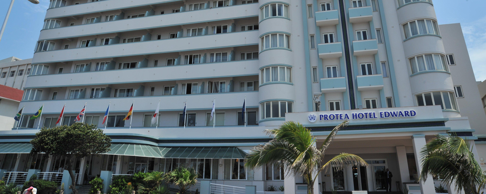
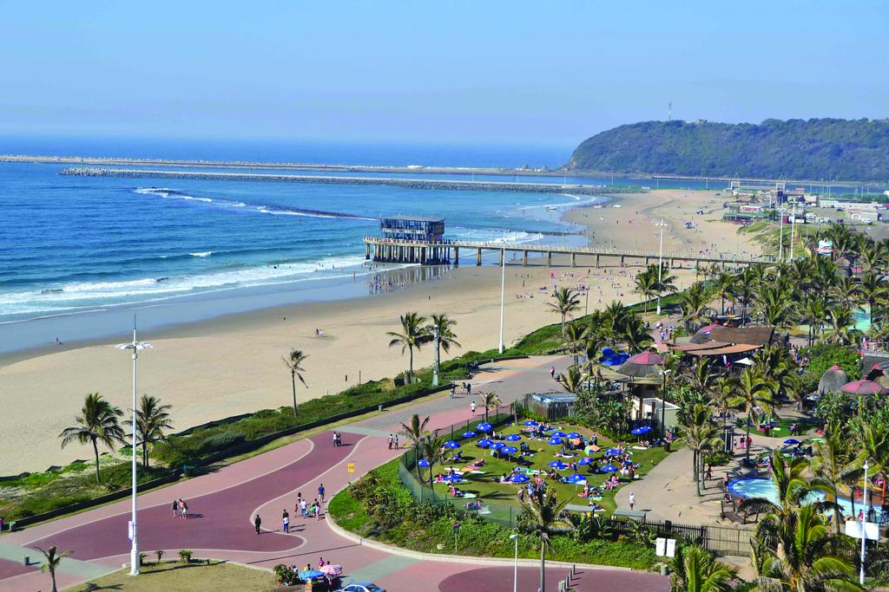
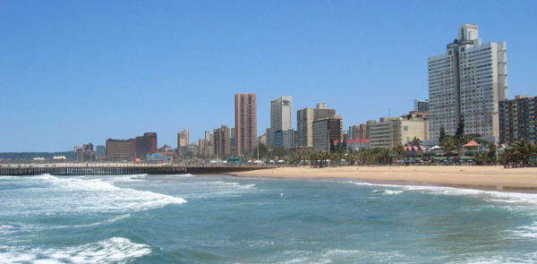
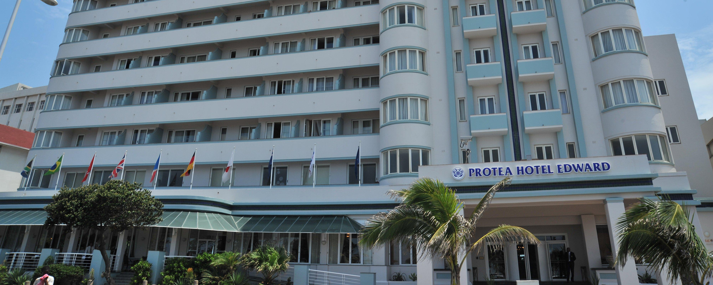
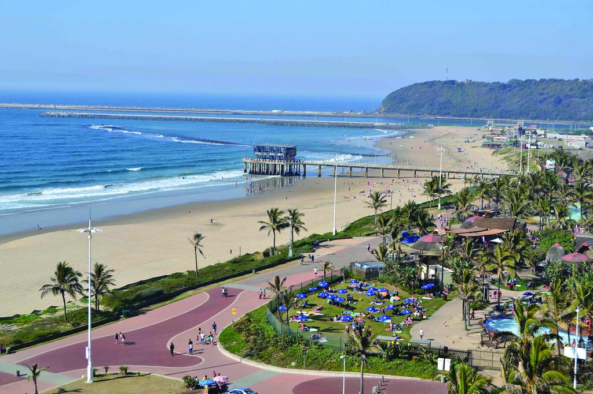
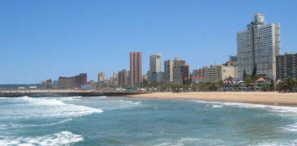

Durban is the third most populous city in South Africa after Johannesburg and Cape Town and the largest city in the South African province of KwaZulu-Natal. Located on the east coast of South Africa, Durban is the busiest port in the country. It is also one of the major centres of tourism because of the city's warm subtropical climate and extensive beaches. Durban forms part of the eThekwini Metropolitan Municipality, which includes neighboring towns and has a population of about 3.44 million, making the combined municipality one of the biggest cities on the Indian Ocean coast of the African continent. It is also the second most important manufacturing hub in South Africa after Johannesburg. In May 2015, Durban was officially recognized as one of the New 7 Wonders Cities. Durban was one of the host cities for the 2010 FIFA World Cup. Durban is also the only UNESCO City of Literature in South Africa
 


home



home